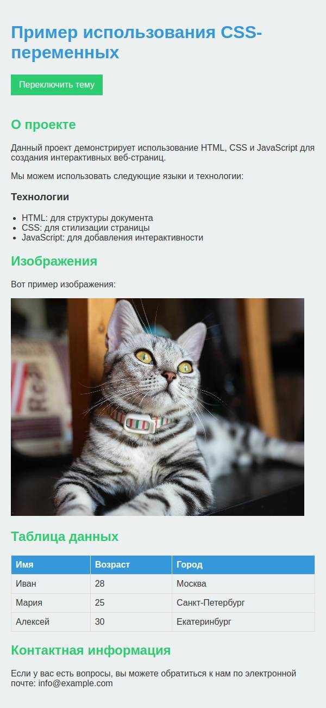
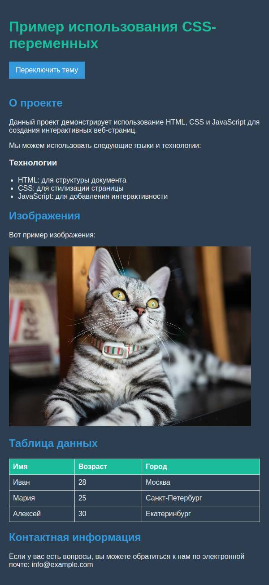

styles/variables.css
Добавьте переменные в глобальную область видимости со следующими значениями:
- primary-color:
#3498db - secondary-color:
#2ecc71 - font-color:
#333 - background-color:
#ecf0f1
Добавьте для этих переменных другие значения для области видимости блока с классом dark-theme:
- primary-color:
#1abc9c - secondary-color:
#3498db - font-color:
#ecf0f1 - background-color:
#2c3e50
Проверьте в веб-доступе что темы переключаются и соответствуют шаблонам.
Светлая тема:

Темная тема:
